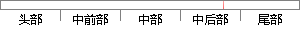

为了实现在时差估计精度不降低的前提下减小运算量，可以借鉴上一节中频差估计利用先验频差信息对信号进行降采样的思路，采用利用先验时差信息先在频域采样降时长，后补零做IFFT的方法来计算互相关函数的精细时域波形。
片段位置图

相似结果|
相似片段 1：进行时差粗估直接得到精确时差值。要实现这一点，就必须对补零后的互功率谱做 IFFT，其运算量又很大。为了实现在时差估计精度不降低的前提下减小运算量，本文借鉴上一节频差估计中利用先验频差信息对信号进行降采样率的思路，采用利用先验时差信息先在频域采样降时长，后补零做 IFFT的方法来计算互相关函数的精细时域波形。 与在频差估计可以中根据先验信息降采样率类似，若根据先验信息可以将互相关函数的时长降至 'T ，那么
|
※ 片段修改建议 ※
近似词参考：- 估计：估量 预计
- 降低：下降 低落
- 借鉴：鉴戒
- 估计：估量 预计
- 利用：操纵 哄骗 使用 行使 应用
- 信号：旌旗灯号
- 进行：举行
- 思路：思绪
- 采用：采取 接纳 采纳
- 利用：操纵 哄骗 使用 行使 应用
- 计算：计较 较量争论 盘算
- 互相：相互
- 相关：相干
- 精细：邃密 精致
系统自动生成语句：为了实现在时差估量精度不下降的前提下减小运算量，可以鉴戒上一节中频差估量操纵先验频差信息对旌旗灯号举行降采样的思绪，采取操纵先验时差信息先在频域采样降时长，后补零做IFFT的方法来计较相互关函数的邃密时域波形。
注：本片段修改建议为系统自动生成，仅供参考。